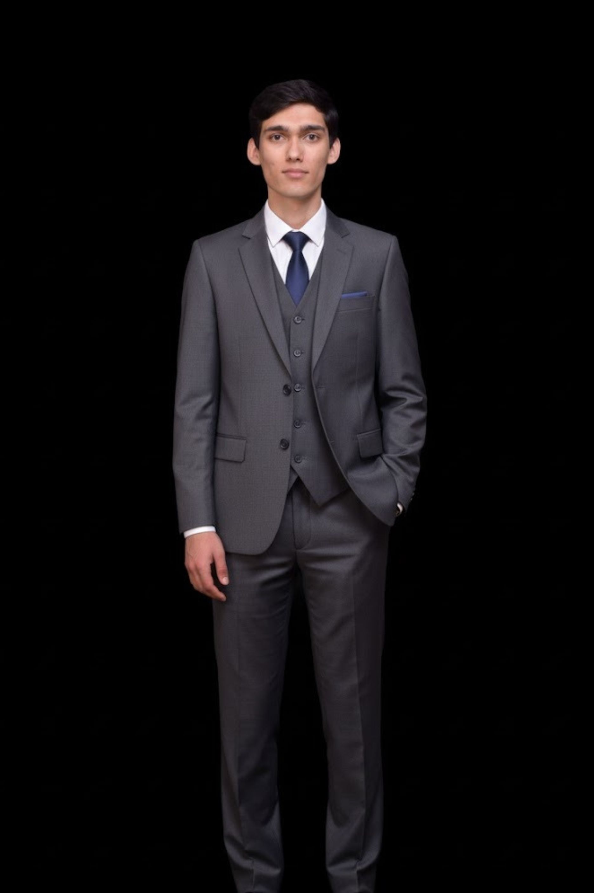

Chief People Officer
As the Chief People Officer (CPO) of NeuroPi, I bring 7 years of experience at the intersection of medicine, management, education, and entrepreneurship. My career has been dedicated to improving human potential through personalized healthcare, learning solutions, and innovative leadership strategies. I combine a strong foundation in clinical medicine with deep expertise in education and business development to foster a people-centric culture at NeuroPi that drives our mission of optimizing human performance at scale.
Having worked in various roles within both healthcare and education, I have gained unique insights into how individuals learn, grow, and develop. As a healthcare professional, I have seen firsthand the impact that personalized treatment plans and wellness strategies can have on human performance. My entrepreneurial ventures have also allowed me to bring innovative solutions to both industries, blending technology with human-centered design to create impactful, scalable systems. At NeuroPi, I am focused on ensuring that we build a people-first organization that thrives on collaboration, diversity, and personal growth.
I have been fortunate to receive the most prestigious European recognition for my contributions to education and entrepreneurship – the European Business Award. It’s an Entrepreneurship Award for launching successful ventures that have improved human development through personalized health and education technologies.
As the CPO of NeuroPi, my primary focus is on ensuring that our team, users, and collaborators are always growing and evolving to their full potential. I oversee the people strategy at NeuroPi, which includes talent acquisition, employee engagement, organizational culture, and personalized development programs. In alignment with NeuroPi’s mission, I am committed to creating an environment that promotes continuous learning, emotional well-being, and personal growth for everyone involved with our platform.